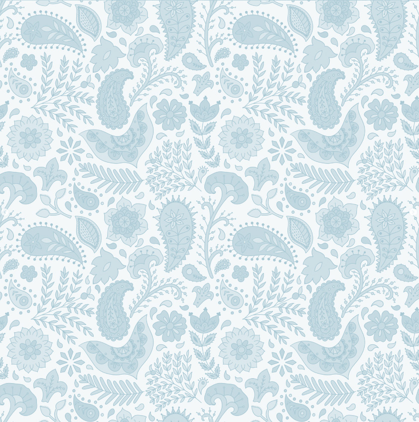
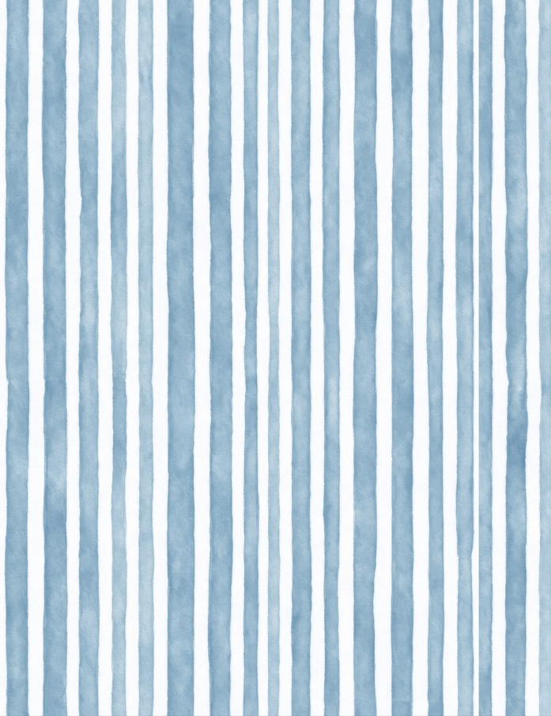
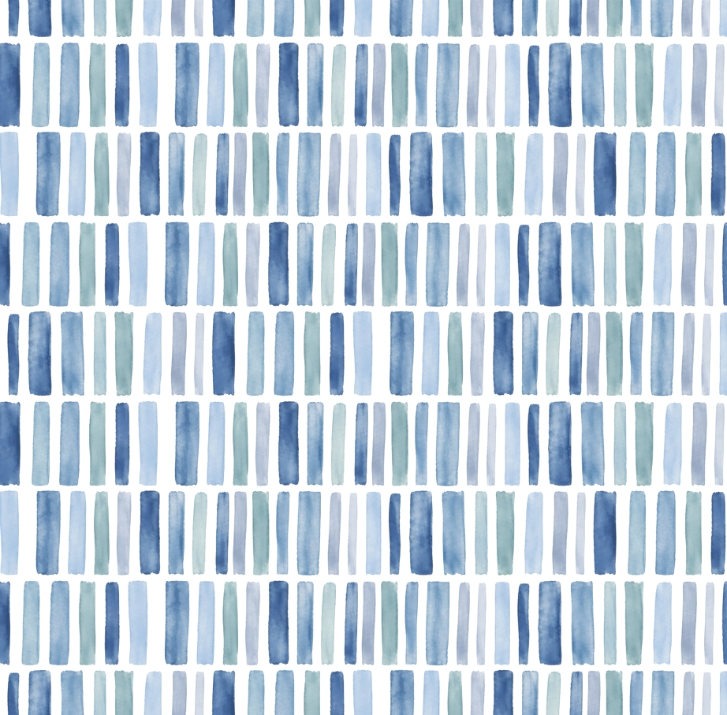
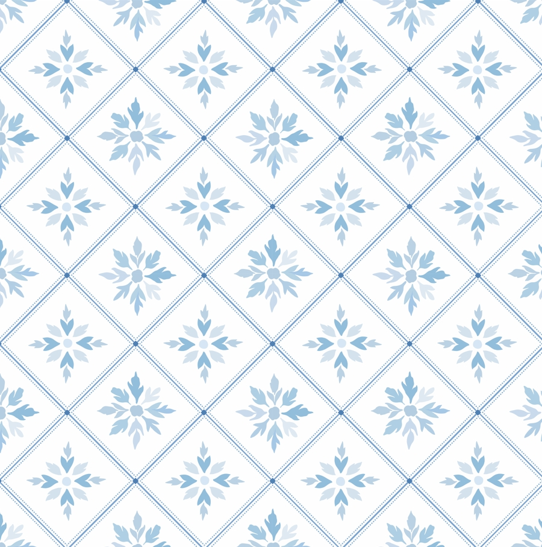
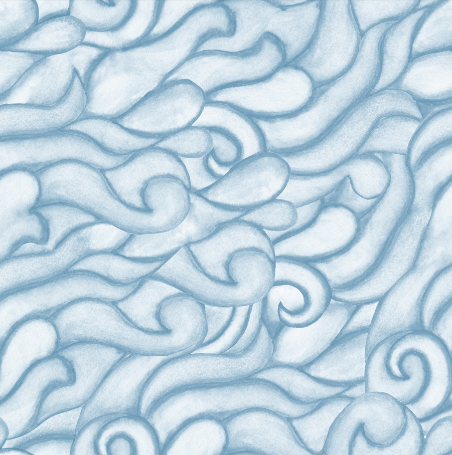
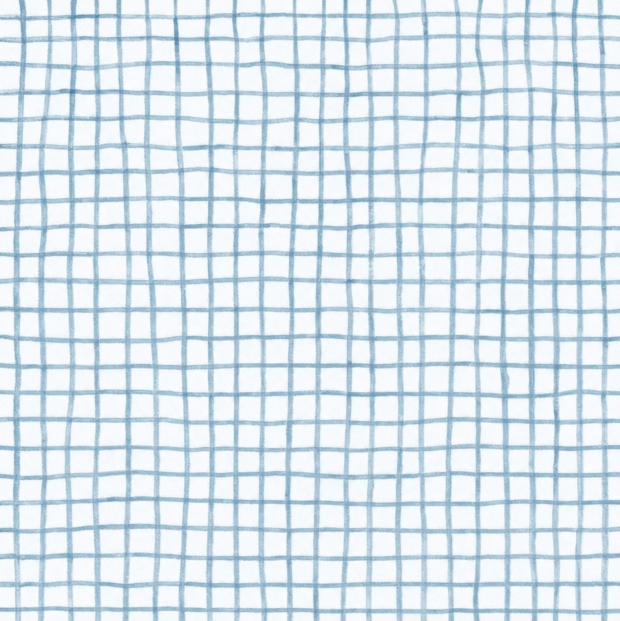
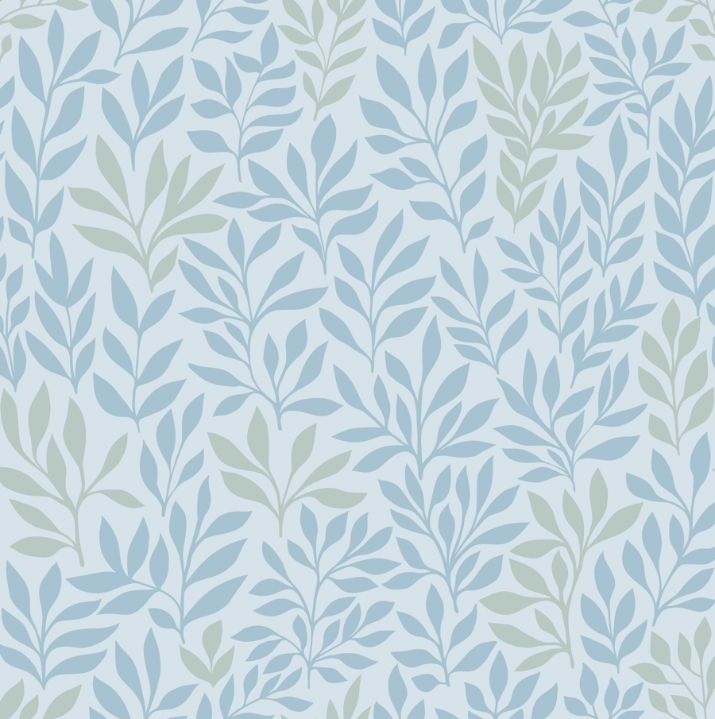
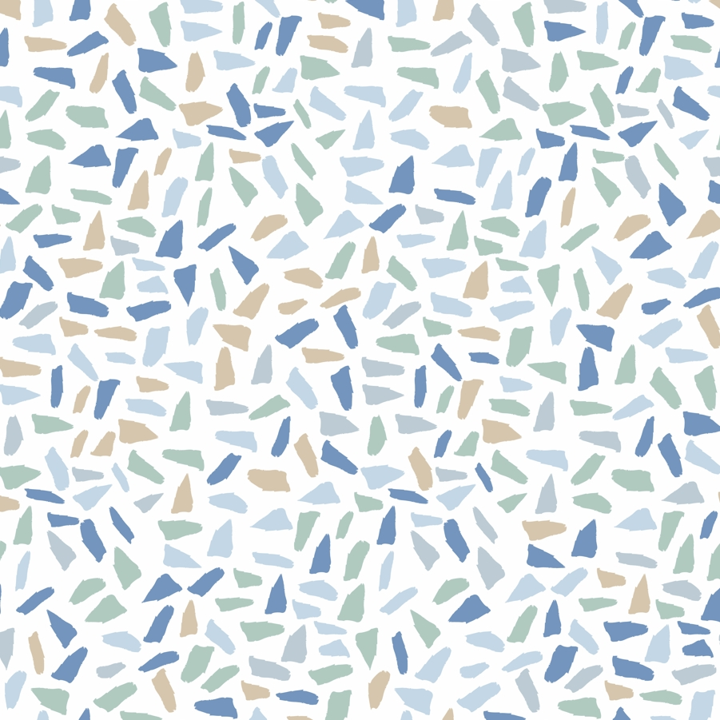

Статья
Как я получила первого клиента на Upwork
Как я получила первого клиента на Upwork
Как выбрать подходящий проект, написать конкретное предложение и получить первый заказ.
Читать статью →Статьи · Кейсы · Практический опыт
Материалы о поиске клиентов, портфолио, Upwork, ценообразовании и развитии творческой карьеры. Каждая статья ведёт к практическим шагам, а не просто к вдохновению.

Как выбрать подходящий проект, написать конкретное предложение и получить первый заказ.
Читать статью →
Не про удачу и не про алгоритмы. История о том, как долгосрочная работа с клиентами привела к статусу Expert Vetted.
Читать статью →
Как проходил разговор с командой Upwork, сколько длился звонок и какие вопросы задавали о проектах, клиентах и ставках.
Читать статью →
Как сделать портфолио понятным для заказчика и встроить его в системный поиск клиентов.
Читать статью →
Как сравнить каналы работы и выбрать фокус под свой опыт, цели и текущий этап развития.
Читать статью →
Как перестать путать страх с энергией и понять, кто внутри нами рулит.
Читать статью →
Как перестать воспринимать правки как катастрофу и научиться работать с обратной связью.
Читать статью →
Как перестать бояться и начать действовать. Снижение важности и работа с тревожными мыслями.
Читать статью →Конкретные приёмы, примеры и разбор ошибок. Как писать сопроводительные письма, на которые отвечают.
Читать статью →